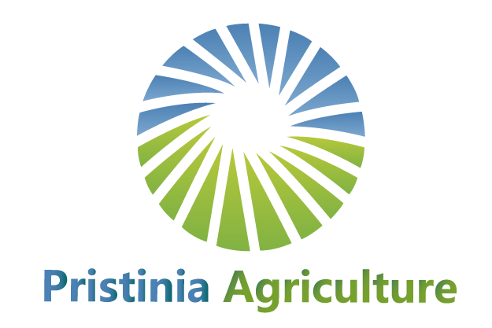
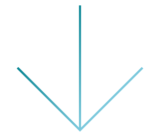

PRISTINIA
AGRICULTURE
Pristinia Agriculture Pte. Ltd. is a leading agriculture company based in Singapore that specializes in three key business areas including the development, production, and distribution of microbial feed additives, silage products, and tailor design special feed programs in combination of both the microbial feed additive and silage products for dairy and meat ruminants including cattle, goats, sheep, and etc. Our feed additive product offers farmers worldwide with a result-driven, turnaround solution for poultry, pigs, and aquaculture applications primarily in shrimp and fishery farming.
